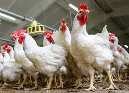
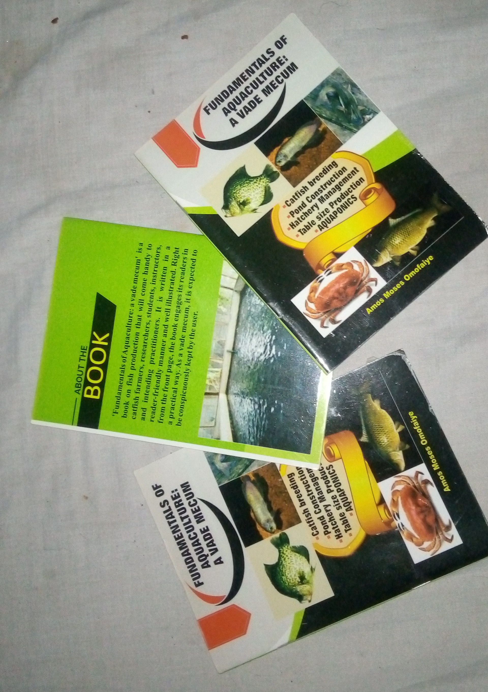
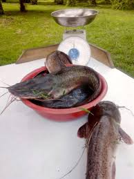
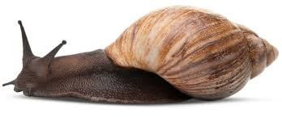

Articles and Publications
Having spent a few years consulting for small businesses on fish production, I decided to put together something tangible on fish production from fingerlings to table size. The book documents the anatomy of catfish, the different types of catfish, the most advisable ones to keep based on economic reasons, how to breed fish and how to take care of them to table size. The book is easy to read and well illustrated. The picture below is the coverpage of the book and it is also the link to the soft copy of the book. If you need the hardcopy, just hit me on any of my social media handles or send an email to me.
Broiler production is a common enterprise among households. Apart from being a source of income, it is also an easy source of protein. Keeping animals at home also helps to instill a sense of responsibility in the household members particularly children. Broiler keeping is so ubiquitous that one may think that everything there is to know about it is already known. Alas, the reverse is the case. The way we produce broilers at the backyard can greatly be improved upon for health and economic reasons. So I also wrote an article on it. The picture below is the link to the article. I am currently writing a book on it. I hope to publish it soon.
Small scale fish farming is a profitable enterprise if properly carried out. Fish especially catfish is well loved in many parts of the world. I love fish too because it is easily digestible. The article I wrote on fish details how you can use cage to keep fish. This approach can be used in places where land is in high demand. The picture below is the link to the article. Feel free to make use of the information in it. Have any query? Hit me up on any of my social media handles or email me.
Snails are easy to rear animals. Snails can be kept at home with minimal investment. They are easy to house and monitor. They are very nutritious and highly sought after. One thing I like about snails is that they do not require much start-up capital or follow-up investment. They can forage on common backyard plants and be fed some kitchen wastes. So, I came up with an article on how to keep snails and the picture below is a link to the article. Enjoy it.
Every enterprise requires adequate record keeping. Without proper records profit or loss will be difficult to determine. Moreover, one will find it hard to make proper plans for expansion. This is a problem with small scale farmers. So, I decided to write an article on it. The picture below is a link to the article. Go through it and reach me on any of my social media handles for further engagement.